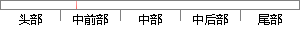

说话人的语音信号不但具有稳定性，而且还具有时变性。
片段位置图

相似结果|
相似片段 1：的变异性。语音信号还具有时变特征，会随着时间的推移，人的生理会不断的变化。另外，在远程语音识别应用的时候，语音信号还会因为语音传输的通信信道的时变效应而产生变异。目前，说话人识别研究的一些工作都是基于这方
|
※ 片段修改建议 ※
近似词参考：- 说话：措辞 语言
- 信号：旌旗灯号
- 不但：不单 不光 不仅 不只 非但
- 具有：具备 拥有
- 而且：并且
- 具有：具备 拥有
- 有时：偶然
系统自动生成语句：措辞人的语音旌旗灯号不单具备稳定性，并且还具备时变性。
注：本片段修改建议为系统自动生成，仅供参考。